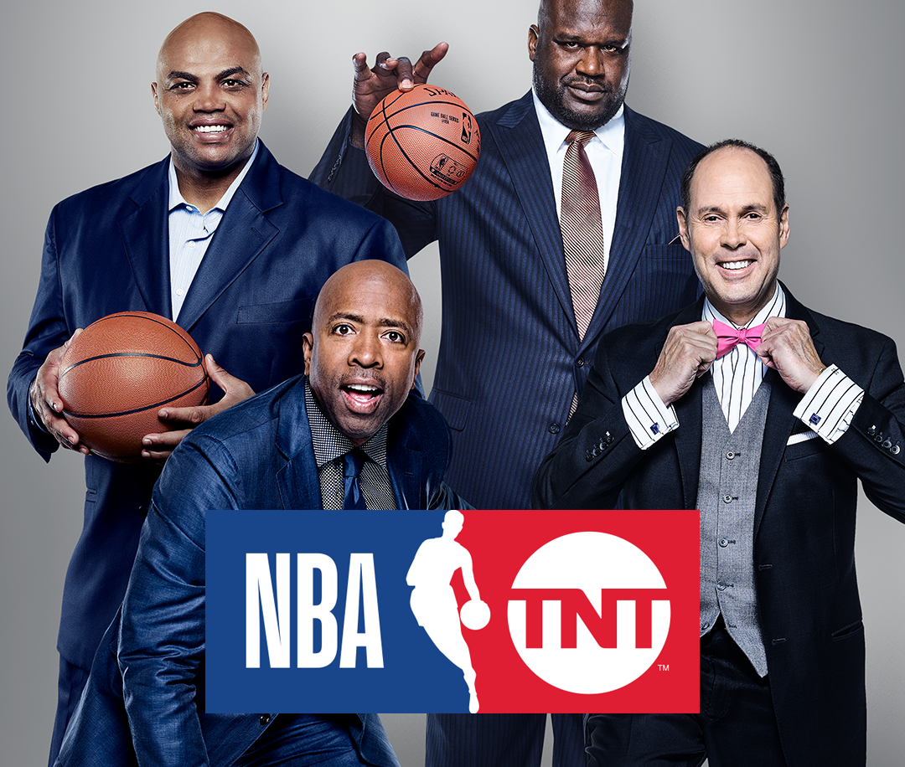
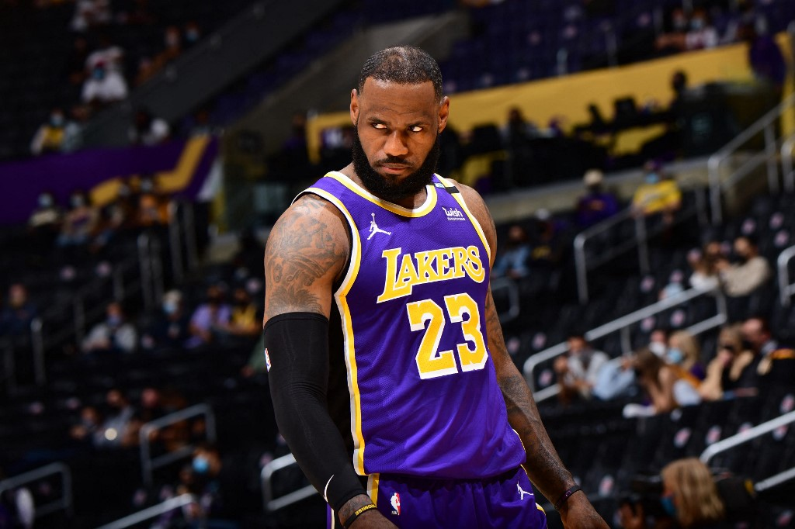
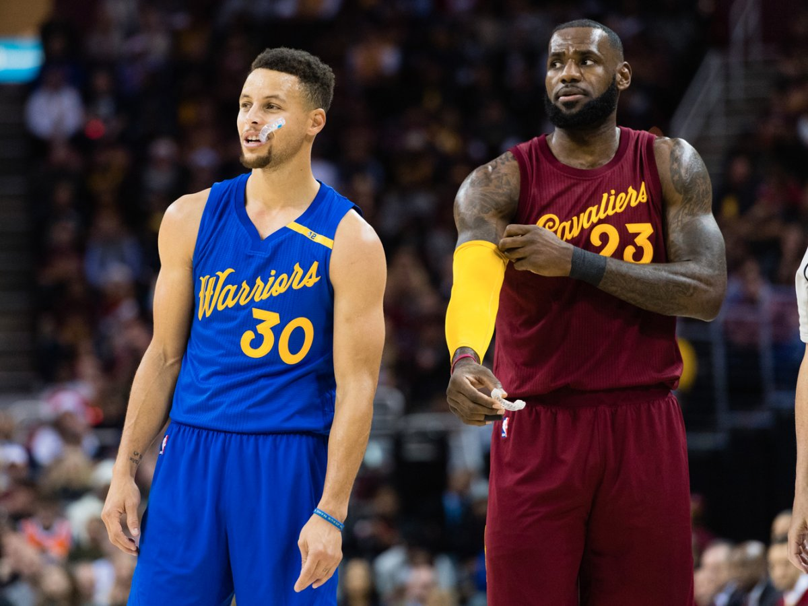

NBA anuncia seleção com os Melhores calouros da Temporada.
LaMelo Ball e Anthony Edwards lideraram votação para o "All Rookie Team".
Após anunciar LaMelo Ball como o calouro da temporada 2020/2021, a NBA revelou nesta quinta-feira o "All Rookie Team", time formado pelos melhores jogadores estreantes do ano.
O quinteto ideal foi formado por: LaMelo Ball (Hornets), Anthony Edwards (Timberwolves), Tyrese Haliburton (Kings), Saddiq Bey (Pistons) e Jae'Sean Tate (Rockets).
Enterradas de Antetokounmpo e Durant marcam noite da NBA.
Bucks vencem Nets e forçam sétimo jogo da semifinal da Conferência Leste.
Com os playoffs afunilando, apenas uma partida da NBA foi disputada na quinta-feira: o Milwaukee Bucks venceu o Brooklyn Nets e forçou o sétimo jogo da série semifinal da Conferência Leste. A partida, claro, foi marcado por belos lances, principalmente dos astros das equipes envolvidas: Giannis Antetokounmpo e Kevin Durant.
Tyronn Lue confirma ausência de Kawhi Leonard para jogo 6 contra o Jazz.
Astro do Los Angeles Clippers já havia ficado ausente do jogo 5 com problemas no Ligamento cruzado anterior do Joelho.
O Los Angeles Clippers irá para o jogo 6 da série contra o Utah Jazz sem contar com a participação de Kawhi Leonard. O técnico da equipe, Tyronn Lue, disse A Mark Medina, do USA Today, que o atleta será desfalque no duelo desta sexta-feira (18).
Kawhi já havia ficado de fora do jogo 5, por conta de problemas no ligamento cruzado anterior do joelho direito.
Segundo informações que vêm de LA, não existe um cronograma definido para que Leonard retorne às partidas.
Sem a participação de Leonard no jogo 5, Paul George assumiu a responsabilidade e liderou LA a vitória por 119 a 111, com 37 pontos e 16 rebotes.
Com vantagem de 3 a 2 na série, os Clippers precisam de uma vitória para garantir vaga na final da Conferência Oeste. O jogo 6 acontece nesta sexta-feira (18), às 23h, no Staples Center, em Los Angeles.
TNT Sports fecha acordo para transmissão de jogos da NBA.
A TNT Sports fechou um acordo para a transmissão de jogos da NBA. A parceria, que também inclui a cervejaria Budweiser, já começa a valer a partir da próxima semana, com a transmissão das finais da Conferência Leste. A informação foi divulgada em primeira mão pelo repórter Leandro Carneiro, do portal UOL.
Pelo acordo, válido até 2023, a emissora do grupo WarnerMedia terá o direito de exibir as partidas do melhor basquete do mundo em seu canal no YouTube. Na próxima temporada serão de dois a três jogos transmitidos por semana, somando cerca de 100 partidas exibidas ao longo de 2021/22.
Com esse acordo com a TNT Sports, o público brasileiro passa a ter mais uma opção para assistir às partidas da NBA. ESPN e SporTV têm os direitos de transmissão para a TV fechada e a Band exibe os jogos na TV aberta.
Além disso, o streamer brasileiro Alexandre Gaules fechou, recentemente, uma parceria com a NBA e a Budweiser e tornou-se o primeiro canal da Twitch a transmitir ao vivo as partidas da liga para todo o Brasil.
Além da TNT Sports, as finais do Leste desta temporada serão exibidas pelo SporTV e pelo canal do Gaules na Twitch. Já a decisão do Oeste, e as finais desta temporada, serão transmitidas com exclusividade pela ESPN para a TV fechada. A Band também poderá exibir as finais, na TV aberta.
Democratizar o acesso aos jogos foi um dos objetivos de Budweiser ao se tornar emissora oficial da NBA no início desta temporada e, com as parcerias, a magia do basquete vai chegar a novos públicos.
“Eu avisei e a NBA não quis ouvir”, questiona LeBron James.
O exagerado número de contusões na atual temporada está deixando o seu reflexo nos playoffs. Porém, LeBron James acredita que a NBA não quis ouvir seu descontentamento com o início da campanha em dezembro, pouco mais de dois meses após a final de 2019-20.
“A NBA não quis me ouvir sobre o início da temporada”, disse LeBron James. “Eu sabia exatamente o que iria acontecer. Eu apenas queria proteger o bem estar dos jogadores, que são o produto do nosso jogo. Essas contusões não são apenas parte do jogo. Tivemos oito, talvez nove All Stars perdendo jogos dos playoffs”.
Após a vitória do Los Angeles Clippers sobre o Utah Jazz, na noite de quarta-feira, Kawhi Leonard foi o oitavo All Star a perder, pelo menos, uma partida nos playoffs de 2020-21, o maior número de todos os tempos. Quando foi especulado o início da temporada antes do Natal, LeBron foi contra e pediu para que fosse adiado. Em vão. Por motivos financeiros, a liga retornou com o menor tempo de descanso (71 dias) entre uma temporada e outra em todos os tempos.
“É a melhor época do ano para a liga e fãs, as estamos perdendo vários de nossos jogadores. É insano”, afirmou. “Se tem uma pessoa que entende tudo do seu corpo, como ele funciona por todo o ano sou eu. Eu falo pela saúde dos jogadores e odeio ver esse tanto de contusões nesta época. Desculpe, fãs, eu gostaria que vocês estivessem vendo os seus jogadores favoritos agora”.
Já perderam jogos: Kyrie Irving e James Harden (Brooklyn Nets), Jaylen Brown (Boston Celtics), Mike Conley e Donovan Mitchell (Utah Jazz), Anthony Davis (Los Angeles Lakers), Joel Embiid (Philadelphia 76ers) e Kawhi Leonard (Los Angeles Clippers). Chris Paul, do Phoenix Suns, está fora por tempo indeterminado, por protocolos de COVID-19 e pode ficar fora do início da final do Oeste.
“Sendo completamente honesto, eu não esperava que a NBA estivesse considerando a volta antes do Natal”, disse LeBron, no dia 7 de dezembro. “Eu não esperava porque as conversas iniciais apontavam o início no meio de janeiro”.
Segundo o site Elias Sports Bureau, durante a temporada regular, os jogadores que estiveram na última edição do Jogo das Estrelas, perderam 370 de possíveis 1.944 partidas (19%), o maior índice de todos os tempos.
LEBRON, DURANT, CURRY OU MESMO ANTETOKOUNMPO, NÃO ESTÃO NEM AÍ PRA QUEM É O MELHOR JOGADOR DA NBA.
Por boa parte das vezes, o papo sobre quem é o atual melhor jogador da liga, ou mesmo quem é o melhor da história, é uma discussão sem fim, que acaba não gerando nenhuma conclusão.
Pra falar a verdade, acho que podemos duvidar e muito que os próprios jogadores se importam com isso.
Depois de uma partida magnifica de Kevin Durant no Jogo 5 nesta semana entre Bucks e Nets, muitos afirmaram que o jogador é o melhor da liga neste momento. Até mesmo o seu adversário, Giannis Antetokounmpo, deu sua opinião concordando com a afirmativa.
LeBron foi outro que foi ao Twitter ovacionar a grande partida do colega.
“GRANDEZA !! Apreciem enquanto vocês podem! #KD ”
Além desta temporada, muito se especula em quem seria o maior jogador de todos os tempos. Michael Jordan que dominou a liga nos anos 90, ou LeBron James, que vai entrar em sua 19ª temporada e ainda busca mais títulos para seu currículo.
Verdade é, que eras são extremamente difíceis de se comparar. Nos tempos de Jordan o basquete era jogado de forma totalmente diferente aos dias de hoje, e podemos afirmar o mesmo dos tempos de Kobe, e agora na reta final da carreira de LeBron, Curry, Durant, Giannis e muitos outros.
Talvez o maior jogador de todos os tempos seja aquele que mais influenciar a base de torcedores e que faça com que a mais adeptos comecem a assistir os jogos com mais frequência. E nestes exemplos acima, todos fizeram a lição de casa com muita propriedade.
No final das contas, felizardos somos nós em podermos assistir todos eles.